Data analysis to evaluate the hospitalisation risk between SARS-CoV-2 Variants
code
analysis
covid19
Author
Mauricio Patón
Published
January 12, 2023
1 Introduction
In this report, an analysis of the data to be used to estimate epidemiological parameters for the different SARS-CoV-2 lineages of interest (e.g.: BA.1, B.1.629, etc.) is presented. Firstly, the data is cleaned to ensure that no duplicates, and proper lineages are used. Then, the data analysis is conducted. In particular, the analysis is focused on the identification of potential biases in the data as it compares people who were sequenced against people who were not sequenced.
Warning
Due to confidentiality issues, the results have been masked in this document accordingly.
The data displayed in the figures, tables and text are shown for illustrative purposes and do not reflect real numbers.
All people who entered through a port of entry and had a positive PCR.
The rest of the infected people were sequenced based on a random sample proportionally to the number of positives reported by each lab on a weekly basis.
Sampling prior to the stated day needs to be double-checked for proper interpretation.
The sampling strategy described follows WHO recommendation. Therefore, it might be of interest to develop a methodology in which an unbiased (or systematically low bias) estimator of the sample is found after following WHO recommendations for sampling COVID-19 patients.
First, we are going to load the dataset and examine it:
As we see, we have information per patient for the following variables:
PseudoID: Unique identifier for each patient.
Lineage: Identification of the lineage sequenced.
CollectionDateTime: Date and time in which the PCR sample was collected for the infected patient.
Dose_VaccinationDate: Date in which the vaccination of the dose referred was taken.
Dose_Vaccine_Type: Type of vaccine that was taken.
Vaccination Status: Fully vaccinated if the individual got at least two doses or unvaccinated.
NoOfDoses: Number of vaccine doses received per individual.
LineageHospitalized: Identification of hospitalization for the patient who was sequenced.
IsDied: Identification of death for the patient.
Death_Date: Date in which the patient died.
LOS: Length of stay in the hospital.
Hospital_Discharge_date: Date in which the patient was discharged.
Date_hospitalization: Date in which the patient was admitted.
Gender: Male or Female.
Nationality: Expatriate or Local.
Covid_Variant: Recoding of the variant of the COVID Lineage.
Comorbidities: Number of comorbidities per patient.
PriorInfection: Flag if the patient registered a prior infection before the current positive.
PriorInfection_Count: Number of previous infections registered.
Age: Age of the patient.
Band15Years: Age group of 15 years old for the patient.
Sequenced: Identification for patients that were sequenced or not sequenced.
Performing.Facility: Lab conducting the collection of the sample that was sequencing. This field will be used to estimate the population properties of those that were randomly sequenced. In particular, checking the randomness assumption is a goal of the work presented in this document. (Group 3)
Tableau_ICU_Status: Label if the patient is ICU/HDU or dead. This field will be used to label the patients as HDU/ICU pr dead as reason per sequencing. All patients labeled in this field were sequenced. (Group 1)
Tableau_Travel_Country_Name: Travel history of the positive patient in the last XX days. This field will be used to label those patients who tested positive and had a travel history according to the IDN and PRP databases. (Group 2)
1.2 Cleaning data procedure
Firstly, we need to clean the data to ensure that the data is of a good enough quality and no double-counting occurs. In particular we are going to focus on three aspects:
Re-code lineage into relevant variants. In particular:
a. Rename AY.XX into parent lineage Delta B.1.659.2.
b. Rename all BA.X.X into the parent lineage BA.X (e.g. BA.1.1 is renamed as BA.1).
c. Rename variant B.1.1.529 as BA.1 as per this description.
Fix records in which age is not defined by retrieving the age from the year of birth from the Emirates ID.
Remove invalid records, namely:
a. EIDs that are invalid and do not correspond to any record (5145 records).
b. Records with lineage labeled as Jul 25 2022 12:00AM (2033 records).
c. Records with a CollectionDateTime before February 1st, 2020 (6 records).
Remove duplicate IDs covering the same infection case are present in the database (e.g. two EIDs for the same date labeled the lineage as BA.2 and BA.2.1).
Select for the patients sequenced only those whose lineage sequenced have at least more than 500 records.
Check also how many records labeled as non-sequenced have a lab assigned according to the dashboard data from ADPHC.
Once the data is cleaned, we can summarize the number of cases per variant recorded and compare it to the values published by ADPHC.
1.2.1 Summary of main lineages after re-labeling
Lineages in the dataset appear with multiple names. Some of those lineages were recorded with multiple names. In the original dataset there are 1000 different variants labeled. Some of the reasons for so many sublineages defined registered were
All sublineages were registered (e.g.: BA.2.40, BA.2.75)
The mutation of the sublineage was labeled registered (e.g.: AY.17 (S:D1118Y))
Some sublineages contain a certain description (e.g. BA.2 (Recombinant?))
Some sublineages are double coded (e.g.: “Delta/B.1.617.2”)
Some sublineages were wrongly labeled (e.g.: ~2000 records with “Jul 25 2022 12:00AM” as lineage)
Therefore, an aggregation criteria needs to be defined. For the purposes of this report, the following criteria was used:
Description of mutations were removed (e.g. AY.17 (S:D1118Y) becomes AY.17)
All variants were re-defined to their main sub-lineages (e.g.: AY.17 or AY.103 were redefined as B.1.617.2).
Double labeling was defined as per the lineage name (e.g.:Delta/B.1.617.2 was coded as B.1.617.2).
Variant B.1.1.529 was renamed as BA.1.
All records with lineage labeled as “Jul 25 2022 12:00AM” were removed.
After the re-coding of the lineages in the databases, the number of records for each lineage (for those lineages that contained more than 500 records) is shown in Figure @ref(fig:check-recoded-lineages). It is important to note that this distribution is done with the raw data before removing duplicates in the data.
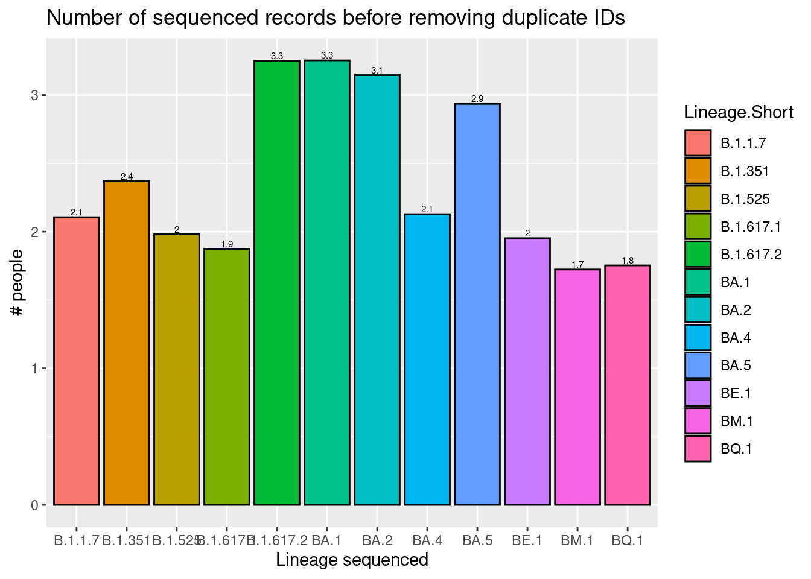
Number of records per lineage before removal of duplicates.
Once lineages have been re-coded and the data cleaned from invalid records, we can move into the removal of duplicates.
1.2.2 Clean Duplicate EIDs
After recoding lineages and fixing the records that were considered as invalid, the next step consists of cleaning the data by removing all the duplicates.
Firstly, We check the number of duplicate IDs appearing in the database. This is shown in ?@tbl-duplicate-ids-check or Table @ref(tab:duplicate-ids-check):
Number of records per ID number of the 10 most repeated records in the database.
PseudoID
# records
{6BFEAEC8-A945-48B5-B87B-59E8E6F64435}
340
{20A622C3-06CB-4E9D-86E0-0632490450B6}
144
{37D050C7-4927-4AC6-B43E-6631A462EC3D}
140
{B3BA3F02-9D09-42A4-AF4F-8DEC36CE5007}
140
{080D687A-A6E6-4BC1-9098-EE740BEE0EC9}
120
{492A371D-3629-455E-9FE2-8760C6B1783F}
120
{74E26468-4BF9-4503-BAE4-785942560BED}
120
{9DC90E03-1C5A-40F0-8330-3BDD7DE5D57D}
120
{C9EEA6BA-0D32-4BC1-9E4E-5A4E550689DE}
120
{F80A583E-AC85-4C45-9F75-823AD0592E87}
120
As we see in the summary table, there are many patients that are repeated in the records (as many as 340 times).
For example, we can see the different labels for a given patient in Table @ref(tab:patient-multiple-records):
Different records for the same infection(s) for patient with PseudoID
CollectionDateTime
Nationality
Age
Lineage.Short
Tableau_Travel_Country_Name
Tableau_ICU_Status
Performing.Facility
Sequenced
2021-12-25 00:00:00
Expatraite
30
Yes
Others
Danat Al Emarat Hospital
0
2021-12-25 00:00:00
Expatraite
31
Yes
Others
Danat Al Emarat Hospital
0
2021-12-25 00:00:00
MOROCCO
30
Yes
Others
Pure Health
0
2021-12-25 00:00:00
MOROCCO
30
Yes
Others
Pure Health
0
2021-12-25 00:00:00
Expatraite
31
BA.1
SERBIA
Others
Danat Al Emarat Hospital
1
2022-06-12 00:00:00
MOROCCO
30
BA.5
UNKNOWN
Others
Pure Health
1
2021-12-25 00:00:00
Expatraite
30
Yes
Others
Pure Health
0
2021-12-25 00:00:00
Expatraite
31
Yes
Others
Pure Health
0
2021-12-25 00:00:00
MOROCCO
31
Yes
Others
Danat Al Emarat Hospital
0
2021-12-25 00:00:00
MOROCCO
31
Yes
Others
Danat Al Emarat Hospital
0
2021-12-28 00:00:00
MOROCCO
31
Unknown
0
2022-06-12 00:00:00
Expatraite
30
BA.5
UNKNOWN
Others
Pure Health
1
2022-06-12 00:00:00
Expatraite
30
BA.5
UNKNOWN
Others
Pure Health
1
2022-06-12 00:00:00
Expatraite
30
BA.5
Others
Pure Health
1
2022-06-12 00:00:00
Expatraite
31
BA.5
Others
Pure Health
1
2022-06-12 00:00:00
MOROCCO
30
BA.5
Others
Pure Health
1
2022-06-12 00:00:00
MOROCCO
30
BA.5
Others
Pure Health
1
Therefore it looks like many patients are registered as repeated cases for the same infection episode. Those patients had differences in the label in the following fields:
Variant names (e.g. BA.1 and BA.1.1 for the same patient - not shown in table after recoding.
Collection dates (e.g. patient collection date was 7/2/2021 and 8/2/2021).
Different values for Tableau_Country_Names (e.g. Yes/No/Country name).
Infection episodes (e.g. one infection in 30/07/2021 and 01/02/2022).
Therefore, we need an additional aggregation step to identify each infection episode as a unique record. The following steps were followed to fix this issue with duplicate EIDs:
Identify each episode of infection within 30 days as one infection episode.
Define Collection Date as the first date in which the sample of the infected individual was collected
Fill the nationality field with the record that contains a nationality
Fill the lineage field with the first record of the patient that contains a proper lineage
Create a Travel.Country field in which to register the country name (if available) for the given ID.
Create a Travel.History field in which to register the labels Yes/No/Unknown for the given ID.
Create a Traveled field with Yes/No if there is a valid field in Travel.Country or Travel.History (e.g. patient with empty field in Travel.History but with Travel.Country label). This means that those patients with travel history unknown and/or travel country name as unknown were considered as non-travelers.
Register the first non-empty field for Tableau_ICU_Status.
Register the first non-empty field for Performing Facility for sequenced patients (when available).
After cleaning the data, we can check how many times a person is repeated in Table @ref(tab:duplicate-ids-cleaned-check).
Number of records per ID number of the 10 most repeated records in the database.
PseudoID
# records
{92E11469-6664-4C51-B14B-45C1844C6761}
6
{53E1C60B-BDD6-4A59-85D4-3152AF8FE89F}
5
{763E6F05-FA36-4203-B78B-58DB686BEC1E}
5
{8E907F96-5A60-4B8C-97BD-D22B0B7DFBDE}
5
{A5E35727-E930-44CB-A734-10429FAAB9E1}
5
{CDD7B77C-D1AC-43A8-B257-D1EEF6AC6689}
5
{F719CB95-F15C-4EED-8666-46D2030BA2CE}
5
{0461EE2E-5C5A-4188-9821-F625C174D335}
4
{0506B233-B0B9-4E64-B7BC-F61A7396923C}
4
{112090DF-F669-41D9-BB11-381F86D64F6C}
4
In addition, we can check also if the record of the patient shown in Table @ref(tab:patient-multiple-records) has become the expected record in Table @ref(tab:patient-multiple-records-cleaned):
Different records for the same infection(s) for patient with PseudoID
Collection.Date
Nationality
Age
Lineage
Travel.History
Tableau.ICU.Status
Performing.Facility
Sequenced
2021-12-25
MOROCCO
30
BA.1
Yes
Others
Danat Al Emarat Hospital
1
2022-06-09
MOROCCO
30
BA.5
Yes
Others
G42 Laboratory
1
The distribution of lineages after the removal of duplicate records is shown in Figure @ref(fig:remove-duplicate-records-plot):
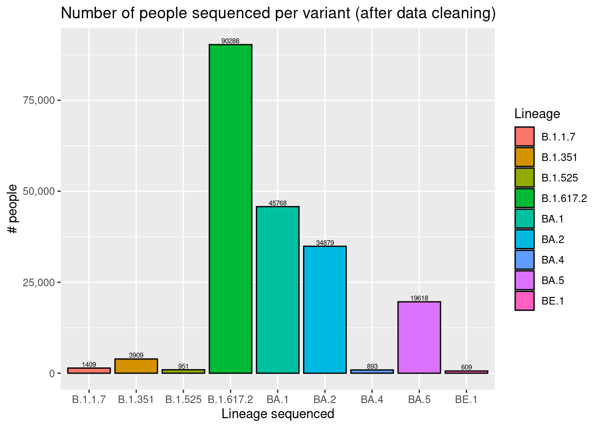
Number of people sequenced per variant after data cleaning. Only those variants that were sequenced with more than records per lineage are shown.
With the lineages unified and the duplicates removed, we can go ahead and study the data.
1.3 Comparison between sequenced and non-sequenced samples
One important aspect to compare population sequenced vs. non-sequenced is to see how the compare in terms of age. This will be shown the following subsections
1.3.1 Age group distribution of sequenced and non-sequenced samples
Once we have separated the sequenced with the non-sequenced data we can compare the distribution of cases for the not sequenced people. This will be compared with the sequenced data. This show in Figure @ref(fig:group-by-age-density):
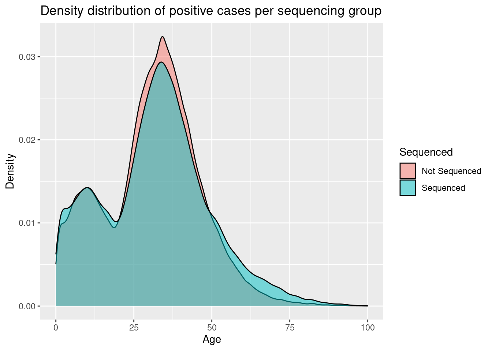
Density distribution of positive cases for sequenced and non-sequenced people
We can see also the total count for sequenced and non-sequenced groups in Figure @ref(fig:group-by-age-histogram):
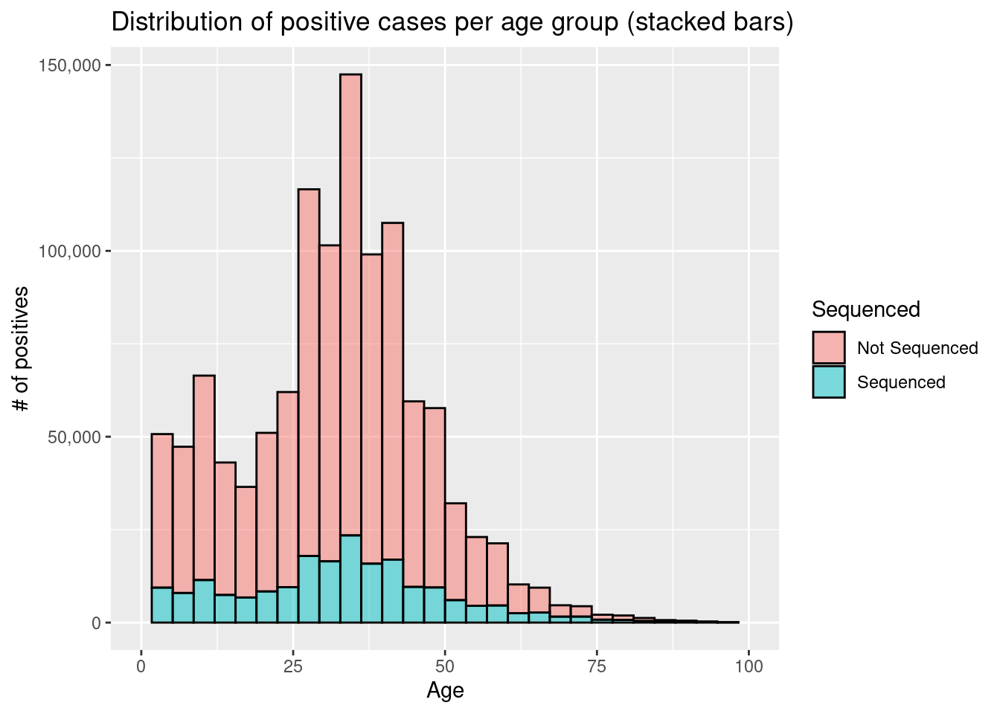
Histogram fo the distribution of positive cases for sequenced and non-sequenced people
1.3.2 Samples distributed by reason for sequencing
We can break down the totals shown in Figure @ref(fig:distribution-by-reason-seq) into the age distribution by reason for sequencing:
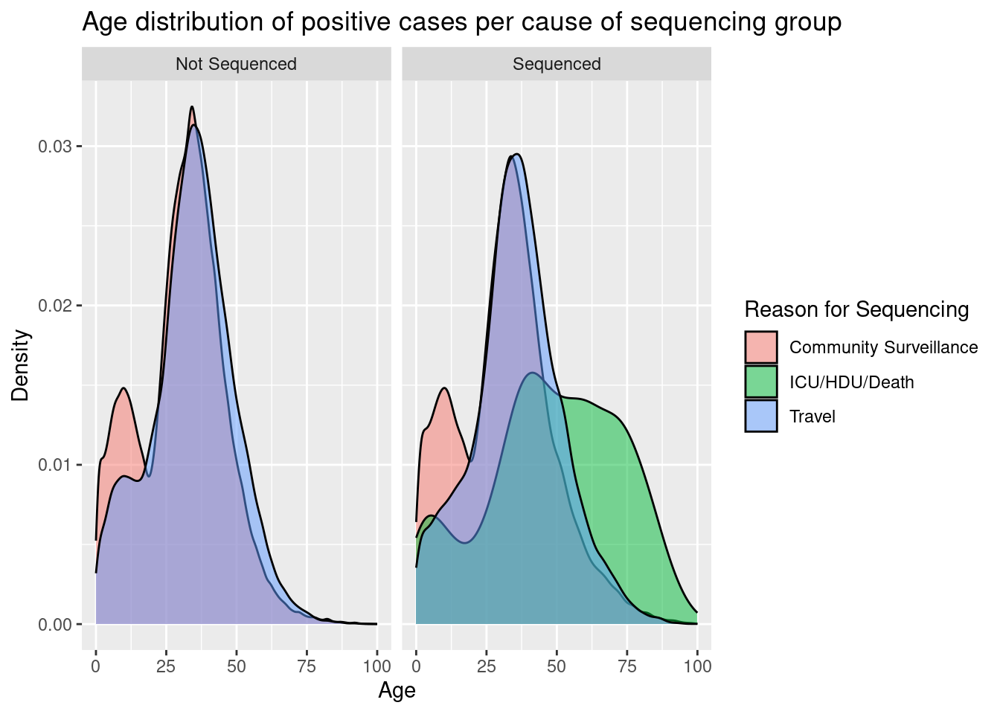
Density distribution of positive cases per reason of sequencing for sequenced and non-sequenced people
1.3.3 Sample distribution based on nationality
We can see the distribution of the samples based on their nationality in Figure @ref(fig:distribution-by-nationality):
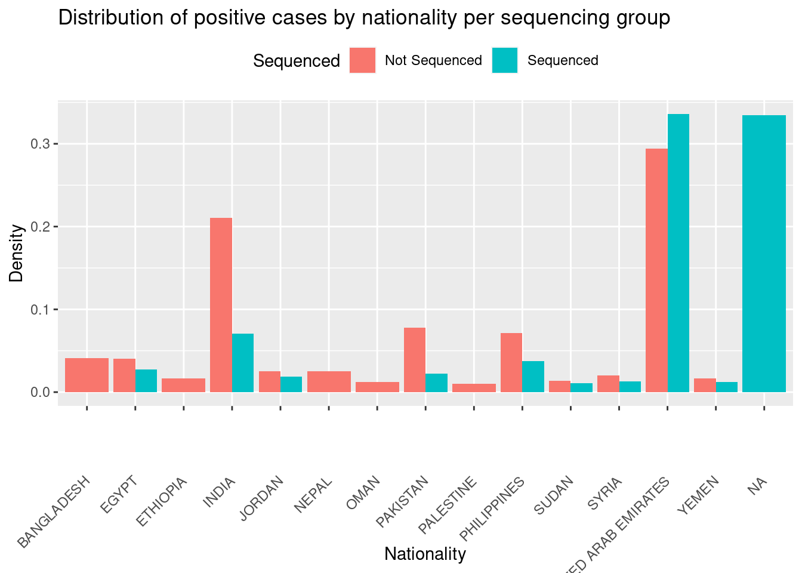
Due to the high number of labels however, it is difficult to define a significant difference for nationality regarding the samples for the sequenced and non-sequenced people.
1.3.4 Samples for comorbidities of sequenced and non-sequenced
Another aspect that could be studied was the distribution of the samples based on their risk factor. In this case, We can see the distribution of the samples based on their comorbidities in Figures @ref(fig:distribution-by-comorbidities-totals) and @ref(fig:distribution-by-comorbidities):
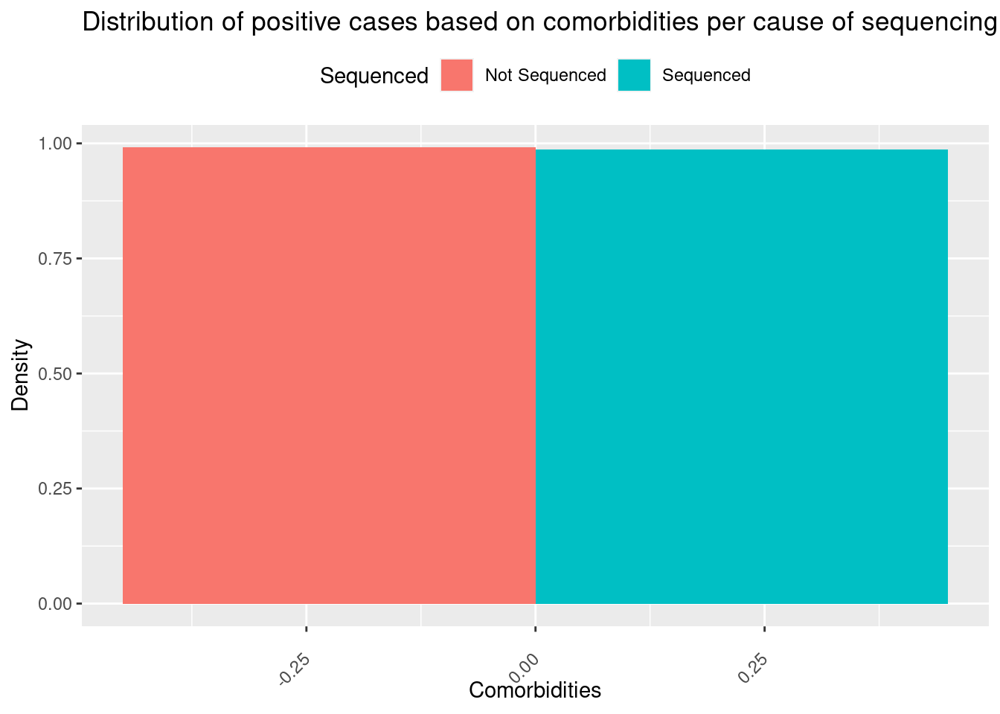
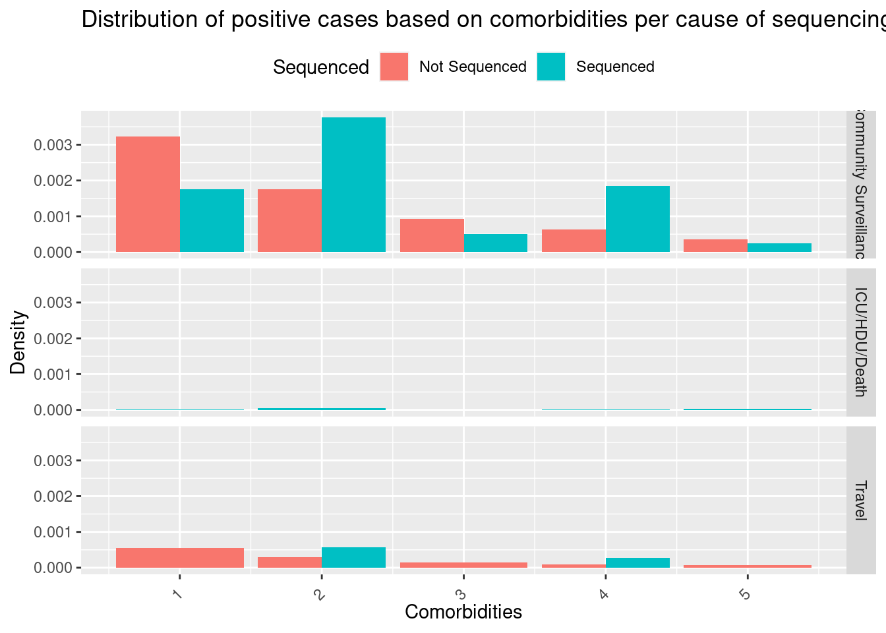
In Figure @ref(fig:distribution-by-comorbidities) we can see that the majority of the population had no comorbidities (> 99%).
1.3.5 Samples distributed by lab
Another layer of granularity is the age distribution per lab. This could be helpful if we are trying to include only labs with an age distribution similar to the non-sequenced people. This is shown in Figure @ref(fig:samples-per-lab):
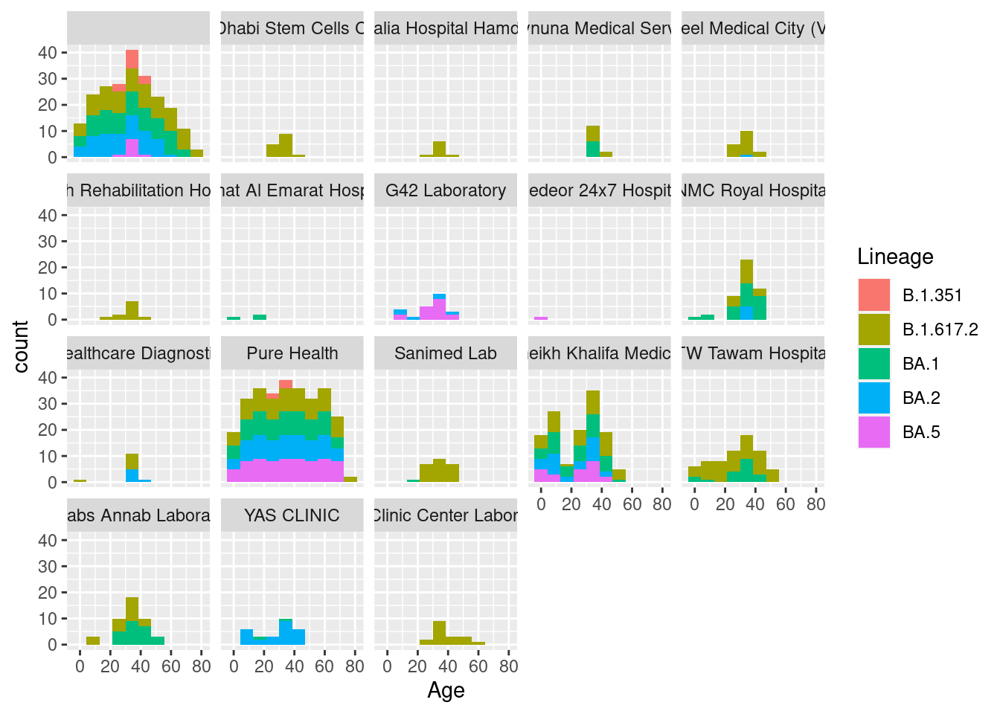
Age distribution of samples collected by each lab.
1.4 Distribution of samples over time
One more way to look at the data is to see how it is distributed over time, regardless of the age of the population. In particular, we can look at the distribution of cases per lineage sequenced, the hospitalisations and deaths
1.4.1 Number of cases sequenced by lineage
We can also plot the lineage evolution over time. We can do it per week for each variant count in Figure @ref(fig:lineage-over-time-N):
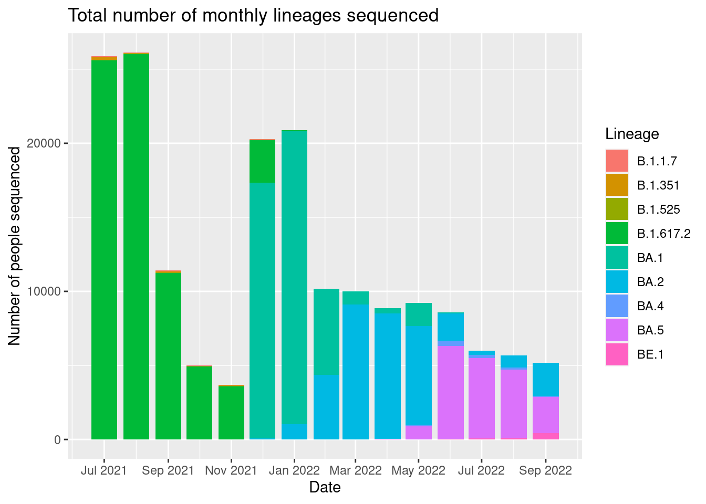
Weekly total count of lineages sequenced. Only those lineages with 500 records or more in the entire dataset are shown.
Another way to visualize better which variant is taking over and when is to visualize this as a percentage. This is show in Figure @ref(fig:lineage-over-time-perc):
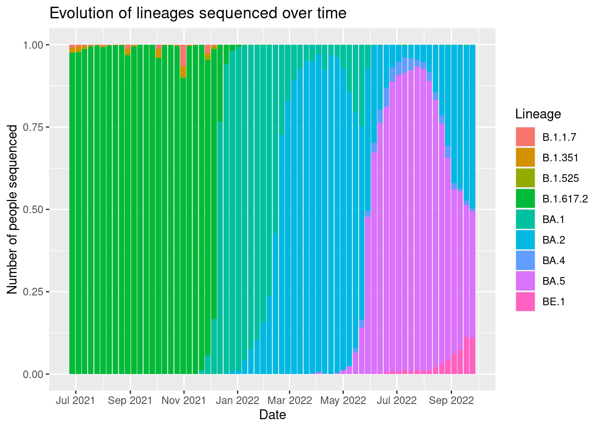
Weekly percentage of lineages sequenced. Only those lineages with 500 records or more in the entire dataset are shown.
1.4.2 Number of hospitalizations
One thing we can do is to summarise per month the number of people tested positive, hospitalized and deaths to compare with the sequenced data. The weekly hospitalisations are shown in Figure @ref(fig:biweekly-hospitalisations):
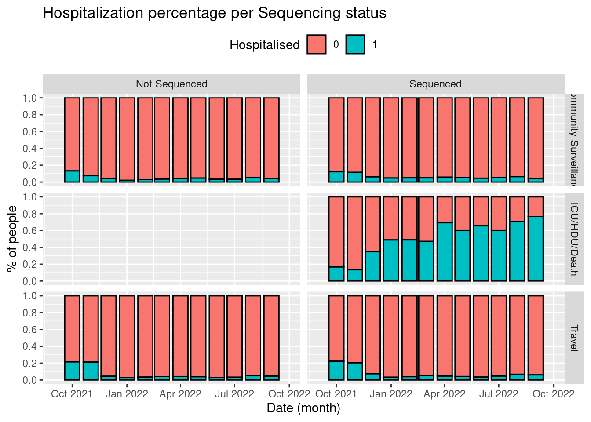
Bi-weekly percentage of hospitalisation people per sequencing status.
As shown in Figure @ref(fig:biweekly-hospitalisations), it is clear that the proportion of people hospitalised from sequenced people is higher than those from people who are not sequenced. Therefore, a direct estimation from the sequenced data only will estimate a higher hospitalisation rate for each variant studied and therefore it is required to adjust for that bias.
1.4.3 Number of deaths
The number of deaths per sequencing status is shown in Figure @ref(fig:biweekly-deaths):
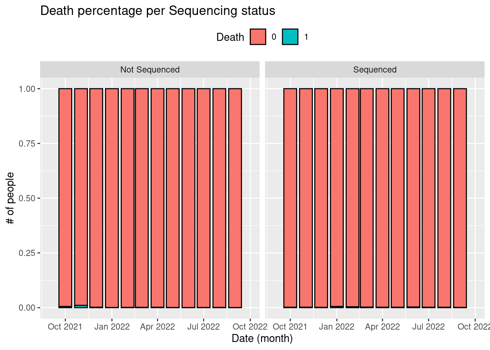
Bi-weekly percentage of deaths by sequenced status.
1.5 Summary table of totals
A table summary for variants and reason for sequencing is shown in Table @ref(tab:table-by-variant):
Number of cases, hospitalisations and death per lineage and reason for sequencing. NAs correspond to the values of not sequenced people.
Reason for Sequencing
Lineage
Number of cases
Number of hospitalisations
Number of deaths
Number of ICUs
Community Surveillance
B.1.1.3
104
3
0
0
Community Surveillance
B.1.1.7
1,357
66
13
NA
Community Surveillance
B.1.351
3,785
181
25
NA
Community Surveillance
B.1.525
936
27
6
NA
Community Surveillance
B.1.617.1
472
31
0
0
Community Surveillance
B.1.617.2
88,407
4,945
309
NA
Community Surveillance
BA.1
40,805
2,092
141
NA
Community Surveillance
BA.2
30,186
1,488
63
NA
Community Surveillance
BA.4
692
30
1
0
Community Surveillance
BA.5
15,939
873
23
0
Community Surveillance
BE.1
486
16
0
0
Community Surveillance
BM.1
203
13
0
0
Community Surveillance
BQ.1
313
2
0
0
Community Surveillance
NA
875,608
28,354
967
NA
ICU/HDU/Death
B.1.351
124
58
15
124
ICU/HDU/Death
B.1.617.2
492
247
87
492
ICU/HDU/Death
BA.5
121
77
11
121
Travel
B.1.617.2
1,389
279
1
0
Travel
BA.1
4,891
200
12
0
Travel
BA.2
4,637
235
1
0
Travel
BA.4
194
10
0
0
Travel
BA.5
3,630
171
5
0
Travel
BE.1
120
7
0
0
Travel
NA
101,211
3,613
49
NA
From summary Table @ref(tab:table-by-variant) a weighted average of the hospitalisation and death rate for each variant can be obtained and then compared it to the non-sequenced data. Given that the number of records of the community surveillance is substantially much higher than the rest of the groups, it could be advisable to use only community surveillance data only.
It can be seen that some of the records labeled as ICU did not match their hospitalisation flag. Therefore this needs to be corrected in the raw data as well.
1.6 Time evolution of daily cases curve
A final check that we are looking at similar data sources can be a comparison between the totals reported during the pandemic and the cases recorded after cleaning the data in this study. This is show in Figure @ref(fig:comparison-with-estijaba):
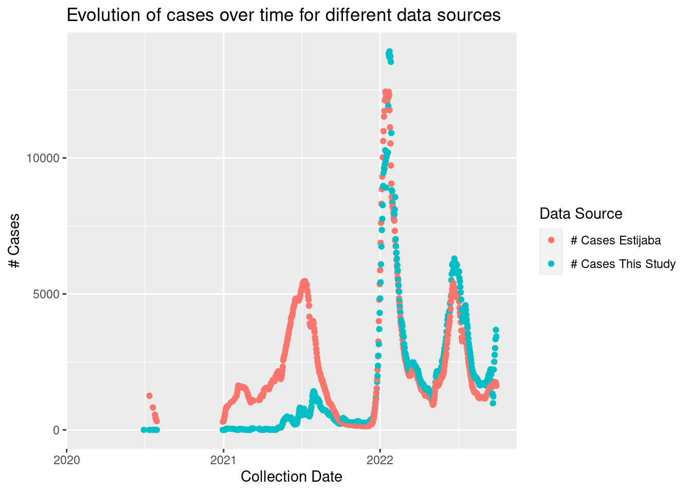
Number of cases over time for two different data sources, namely this study and totals reported by Estijaba.
Since the number of sequenced for the delta variant appears to be somehow very large, we can plot the number of cases per variant over time. This is shown in Figure @ref(fig:comparison-with-estijaba-lineages):
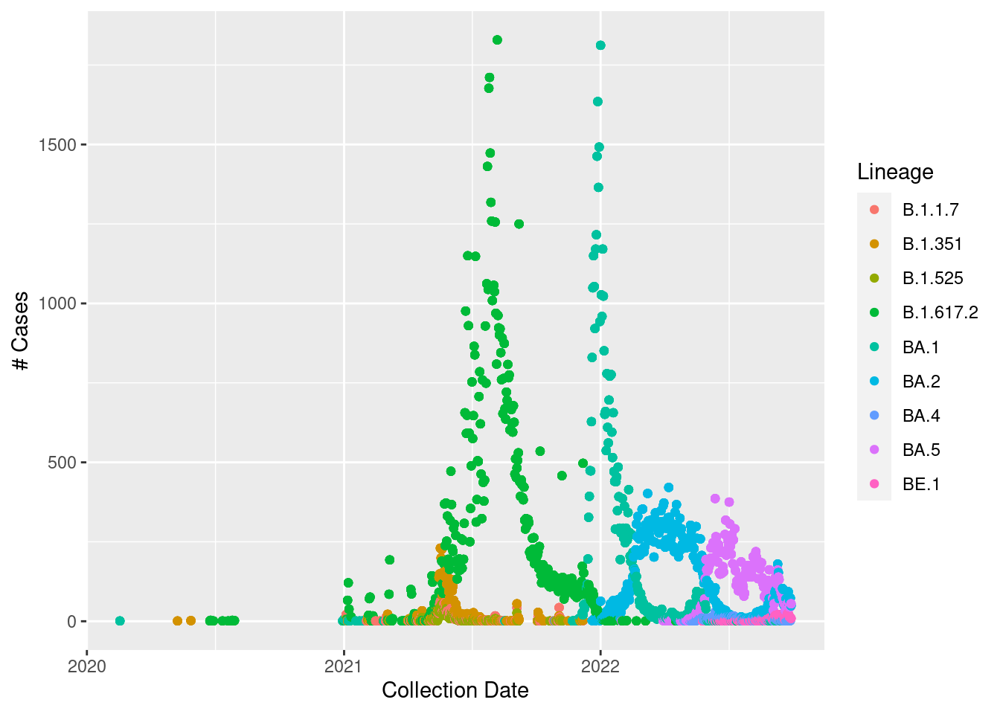
Number of cases over time for two different data sources, namely this study and totals reported by Estijaba.
Source Code
---title: Data analysis to evaluate the hospitalisation risk between SARS-CoV-2 Variantsauthor: "Mauricio Patón"date: "2023-01-12"categories: [code, analysis, covid19]image: "image.jpg"toc: truenumber-sections: true# execute:# cache: true---```{r setup, include=FALSE}knitr::opts_chunk$set(echo = F, tidy =TRUE, message =FALSE, warning =FALSE)# Deactivate the message in summarising from dplyroptions(dplyr.summarise.inform =FALSE)plots_font_size <-12engine ='tikz'engine.opts =list( convert ='convert', convert.opts ='-density 300')fig.ext ='png'knitr::knit_engines$set('javascript')```# IntroductionIn this report, an analysis of the data to be used to estimate epidemiological parameters for the different SARS-CoV-2 lineages of interest (e.g.: BA.1, B.1.629, etc.) is presented. Firstly, the data is cleaned to ensure that no duplicates, and proper lineages are used. Then, the data analysis is conducted. In particular, the analysis is focused on the identification of potential biases in the data as it compares people who were sequenced against people who were not sequenced.:::{.callout-warning}Due to confidentiality issues, the results have been masked in this document accordingly.The data displayed in the figures, tables and text are shown for illustrative purposes and do not reflect real numbers.:::## Sampling IssuesThe [sampling strategy followed in the United Arab Emirates]() from <u>**January 1st, 2022**</u> comprised the sequencing of samples from individuals that belonged to one of the following groups:1. All people in ICU/HDU and/or deceased.2. All people who entered through a port of entry and had a positive PCR.3. The rest of the infected people were sequenced based on a random sample proportionally to the number of positives reported by each lab on a weekly basis.Sampling prior to the stated day needs to be double-checked for proper interpretation.The sampling strategy described follows WHO recommendation. Therefore, it might be of interest to develop a methodology in which an unbiased (or systematically low bias) estimator of the sample is found after following WHO recommendations for sampling COVID-19 patients.```{r load-libraries}if(!require(tidyverse)) install.packages("tidyverse", repos ="http://cran.us.r-project.org")if(!require(ggplot2)) install.packages("ggplot2", repos ="http://cran.us.r-project.org")if(!require(lubridate)) install.packages("lubridate", repos ="http://cran.us.r-project.org")if(!require(janitor)) install.packages("janitor", repos ="http://cran.us.r-project.org")if(!require(stringr)) install.packages("stringr", repos ="http://cran.us.r-project.org")if(!require(kableExtra)) install.packages("kableExtra", repos ="http://cran.us.r-project.org")if(!require(openxlsx)) install.packages("openxlsx", repos ="http://cran.us.r-project.org")if(!require(scales)) install.packages("scales", repos ="http://cran.us.r-project.org")if(!require(ggthemes)) install.packages("ggthemes", repos ="http://cran.us.r-project.org")if(!require(bookdown)) install.packages("bookdown", repos ="http://cran.us.r-project.org")if(!require(plotly)) install.packages("plotly", repos ="http://cran.us.r-project.org")if(!require(data.table)) install.packages("data.table", repos ="http://cran.us.r-project.org")library(tidyverse)library(lubridate)library(ggplot2)library(kableExtra)library(stringr)library(janitor)library(openxlsx)library(scales)library(ggthemes)library(plotly)library(bookdown)library(data.table)```First, we are going to load the dataset and examine it:```{r load-raw-data, echo = F}# Load original data and missing ID dataomicron.data <-read.delim2("./data-provided/20230110-Lineage_Subvariant-Study.txt", sep =",", header = T)missing.age.IDs <- openxlsx::read.xlsx("./data-provided/20230117-Lineage-of-missing-age-pseduoids.xlsx")# # Fill missing IDcolnames(missing.age.IDs)[2] ="AGE"missing.age.IDs <- missing.age.IDs %>%mutate(PseudoID =paste0("{",PseudoID,"}"))# Check variables from original datastr(omicron.data)```As we see, we have information per patient for the following variables:- `PseudoID`: Unique identifier for each patient.- `Lineage`: Identification of the lineage sequenced.- `CollectionDateTime`: Date and time in which the PCR sample was collected for the infected patient.- `Dose_VaccinationDate`: Date in which the vaccination of the dose referred was taken.- `Dose_Vaccine_Type`: Type of vaccine that was taken.- `Vaccination Status`: Fully vaccinated if the individual got at least two doses or unvaccinated.- `NoOfDoses`: Number of vaccine doses received per individual.- `LineageHospitalized`: Identification of hospitalization for the patient who was sequenced.- `IsDied`: Identification of death for the patient.- `Death_Date`: Date in which the patient died.- `LOS`: Length of stay in the hospital.- `Hospital_Discharge_date`: Date in which the patient was discharged.- `Date_hospitalization`: Date in which the patient was admitted.- `Gender`: Male or Female.- `Nationality`: Expatriate or Local.- `Covid_Variant`: Recoding of the variant of the COVID Lineage.- `Comorbidities`: Number of comorbidities per patient.- `PriorInfection`: Flag if the patient registered a prior infection before the current positive.- `PriorInfection_Count`: Number of previous infections registered.- `Age`: Age of the patient.- `Band15Years`: Age group of 15 years old for the patient.- `Sequenced`: Identification for patients that were sequenced or not sequenced.- `Performing.Facility`: Lab conducting the collection of the sample that was sequencing. *This field will be used to estimate the population properties of those that were randomly sequenced. In particular, checking the randomness assumption is a goal of the work presented in this document. (Group 3)*- `Tableau_ICU_Status`: Label if the patient is ICU/HDU or dead. *This field will be used to label the patients as HDU/ICU pr dead as reason per sequencing. All patients labeled in this field were sequenced. (Group 1)*- `Tableau_Travel_Country_Name`: Travel history of the positive patient in the last XX days. *This field will be used to label those patients who tested positive and had a travel history according to the IDN and PRP databases. (Group 2)*## Cleaning data procedureFirstly, we need to clean the data to ensure that the data is of a good enough quality and no double-counting occurs. In particular we are going to focus on three aspects:1. Re-code lineage into relevant variants. In particular: a\. Rename AY.XX into parent lineage Delta B.1.659.2. b\. Rename all BA.X.X into the parent lineage BA.X (e.g. BA.1.1 is renamed as BA.1). c\. Rename variant B.1.1.529 as BA.1 as per this [description](https://gvn.org/omicron-b-1-1-529/).2. Fix records in which age is not defined by retrieving the age from the year of birth from the Emirates ID.```{r invalid-records}nWrongEIDs <- omicron.data %>%filter(!startsWith(PseudoID, "{")) %>%nrow()nWrongLineage <- omicron.data %>%filter(Lineage =="Jul 25 2022 12:00AM") %>%nrow()nWrongDates <- omicron.data %>%filter(CollectionDateTime <="2020-02-01", CollectionDateTime !="") %>%nrow()min_n_variant <-500```3. Remove invalid records, namely: a\. EIDs that are invalid and do not correspond to any record (`r nWrongEIDs` records). b\. Records with lineage labeled as `Jul 25 2022 12:00AM` (`r nWrongLineage` records). c.\ Records with a `CollectionDateTime` before February 1st, 2020 (`r nWrongDates` records).4. Remove duplicate IDs covering the same infection case are present in the database (e.g. two EIDs for the same date labeled the lineage as BA.2 and BA.2.1).5. Select for the patients sequenced only those whose lineage sequenced have at least more than **`r min_n_variant` records**.6. Check also how many records labeled as non-sequenced have a lab assigned according to the dashboard data from ADPHC.Once the data is cleaned, we can summarize the number of cases per variant recorded and compare it to the values published by ADPHC.### Summary of main lineages after re-labelingLineages in the dataset appear with multiple names. Some of those lineages were recorded with multiple names. In the original dataset there are 1000 different variants labeled. Some of the reasons for so many sublineages defined registered were - All sublineages were registered (e.g.: BA.2.40, BA.2.75)- The mutation of the sublineage was labeled registered (e.g.: AY.17 (S:D1118Y)) - Some sublineages contain a certain description (e.g. BA.2 (Recombinant?))- Some sublineages are double coded (e.g.: "Delta/B.1.617.2")- Some sublineages were wrongly labeled (e.g.: ~2000 records with "Jul 25 2022 12:00AM" as lineage)Therefore, an aggregation criteria needs to be defined. For the purposes of this report, the following criteria was used:- Description of mutations were removed (e.g. AY.17 (S:D1118Y) becomes AY.17)- All variants were re-defined to their main sub-lineages (e.g.: AY.17 or AY.103 were redefined as B.1.617.2).- Double labeling was defined as per the lineage name (e.g.:Delta/B.1.617.2 was coded as B.1.617.2).- Variant B.1.1.529 was renamed as BA.1.- All records with lineage labeled as "Jul 25 2022 12:00AM" were removed.After the re-coding of the lineages in the databases, the number of records for each lineage (for those lineages that contained more than `r min_n_variant` records) is shown in Figure \@ref(fig:check-recoded-lineages). It is important to note that this distribution is done with the raw data before removing duplicates in the data.```{r recode-lineages, fig.cap = "Number of records per lineage before removal of duplicates."}data.lineages <- omicron.data %>%# Recode variant namesmutate(Lineage.Short =sub('([A-Z]{1,2}[.]?[0-9]{1,3}[.]?[0-9]{0,3}[.]?[0-9]{0,1}).*', "\\1", Lineage)) %>%mutate(Lineage.Short =sub('([A-Z]{2}.[0-9]{1}).*', "\\1", Lineage.Short)) %>%mutate(Lineage.Short =str_replace(Lineage.Short, "B.1.1.5", "B.1.1.529")) %>%mutate(Lineage.Short =str_replace(Lineage.Short, "B.1.1.529", "BA.1")) %>%mutate(Lineage.Short =if_else(startsWith(Lineage.Short, "AY"), "B.1.617.2", Lineage.Short)) %>%mutate(Lineage.Short =if_else(str_detect(Lineage.Short, "B.1.617.2"), "B.1.617.2", Lineage.Short)) %>%# Fill missing age valuesmutate(AGE =as.numeric(AGE)) %>%left_join(missing.age.IDs, by =c("PseudoID")) %>%mutate(Age =ifelse(is.na(AGE.x), AGE.y, AGE.x)) %>%select(-c(AGE.x, AGE.y)) %>%filter(Age >=0, Age <=150) %>%filter(Lineage.Short !="Jul 25 2022 12:00AM", CollectionDateTime >="2020-02-01", CollectionDateTime <="2022-09-30") %>%filter(startsWith(PseudoID, "{"))``````{r check-recoded-lineages, fig.cap = "Number of records per lineage before removal of duplicates."}# Plot lineages distribution with duplicate datadata.lineages %>%filter(Sequenced ==1) %>%group_by(Lineage.Short) %>%summarise(n =n()) %>%filter(n > min_n_variant) %>%mutate(n =log(n, base =42)) %>%ggplot(aes(x = Lineage.Short, y = n, fill = Lineage.Short)) +# geom_col(aes(fill = Lineage.Short)) + geom_bar(stat ="identity", color ="black") +geom_text(aes(label=round(n,1)), position=position_dodge(width=0.9), vjust=-0.25, size=2) +scale_y_continuous(labels = comma) +xlab("Lineage sequenced") +ylab("# people") +ggtitle("Number of sequenced records before removing duplicate IDs")```Once lineages have been re-coded and the data cleaned from invalid records, we can move into the removal of duplicates.### Clean Duplicate EIDsAfter recoding lineages and fixing the records that were considered as invalid, the next step consists of cleaning the data by removing all the duplicates.Firstly, We check the number of duplicate IDs appearing in the database. This is shown in [@tbl-duplicate-ids-check] or Table \@ref(tab:duplicate-ids-check):```{r duplicate-ids-check}patient.multiple.records <- data.lineages %>%filter(Sequenced ==1) %>%group_by(PseudoID) %>%summarise(Count =n()) %>%filter(Count>1) %>%arrange(desc(Count)) %>%# slice(1:5, 30:35, (n()-5):n())slice_head(n =10)patient.multiple.records %>% knitr::kable(booktabs = T, escape = F, format.args =list(big.mark =","),caption =paste("Number of records per ID number of the 10 most repeated records in the database."),# digits = c(0, rep(c(rep(0,3),rep(3,3)), length(labelsW))), col.names =c("PseudoID", "# records"),# width = 12,align =c('l','c')) %>%# row_spec(0, bold=TRUE) kableExtra::kable_styling(c("striped","hover"), full_width = T) %>%column_spec(column =1, extra_css ="position: absolute") %>%# column_spec(column = 1:length(colnames_allTable), width = "12em; min-width: 8em;") %>% kableExtra::scroll_box(width ="100%", height ="100%", fixed_thead = T)```As we see in the summary table, there are many patients that are repeated in the records (as many as 340 times). For example, we can see the different labels for a given patient in Table \@ref(tab:patient-multiple-records):```{r patient-multiple-records}patientID <-"{6BFEAEC8-A945-48B5-B87B-59E8E6F64435}"data.lineages %>%filter(PseudoID %in% patientID) %>%select(CollectionDateTime, Nationality, Age, Lineage.Short, Tableau_Travel_Country_Name, Tableau_ICU_Status, Performing.Facility, Sequenced) %>%slice(1:5, 30:35, (n()-5):n()) %>% knitr::kable(booktabs = T, escape = F, format.args =list(big.mark =","),caption =paste("Different records for the same infection(s) for patient with PseudoID", patientID)) %>%# digits = c(0, rep(c(rep(0,3),rep(3,3)), length(labelsW))), # col.names = c("PseudoID", "# records"),# width = 12,# align = c('l','c')) %>%# row_spec(0, bold=TRUE) kableExtra::kable_styling(c("striped","hover"), full_width = T) %>%column_spec(column =1, extra_css ="position: absolute") %>%# column_spec(column = 1:length(colnames_allTable), width = "12em; min-width: 8em;") %>% kableExtra::scroll_box(width ="100%", height ="100%", fixed_thead = T) ```Therefore it looks like many patients are registered as repeated cases for the same infection episode. Those patients had differences in the label in the following fields:- Variant names (e.g. BA.1 and BA.1.1 for the same patient - not shown in table after recoding. - Collection dates (e.g. patient collection date was 7/2/2021 and 8/2/2021).- Different values for `Tableau_Country_Names` (e.g. Yes/No/Country name).- Infection episodes (e.g. one infection in 30/07/2021 and 01/02/2022).Therefore, we need an additional aggregation step to identify each infection episode as a unique record. The following steps were followed to fix this issue with duplicate EIDs: 1. Identify each episode of infection within **30 days** as one infection episode.2. Define Collection Date as the first date in which the sample of the infected individual was collected3. Fill the nationality field with the record that contains a nationality 4. Fill the lineage field with the first record of the patient that contains a proper lineage5. Create a `Travel.Country` field in which to register the country name (if available) for the given ID.6. Create a `Travel.History` field in which to register the labels Yes/No/Unknown for the given ID.7. Create a `Traveled` field with Yes/No if there is a valid field in Travel.Country or Travel.History (e.g. patient with empty field in Travel.History but with Travel.Country label). This means that those patients with travel history unknown and/or travel country name as unknown were considered as non-travelers.8. Register the first non-empty field for Tableau_ICU_Status.9. Register the first non-empty field for Performing Facility for sequenced patients (when available).```{r remove-duplicate-records-dplyr}use_dplyr <-0# Variables requiredthreshold_days <-30travel_history <-c("Yes", "No", "Unknown")countries <- data.lineages %>%select(Tableau_Travel_Country_Name) %>%filter(!Tableau_Travel_Country_Name %in%c("UNKNOWN", "Unknown", "Yes", "No", "")) %>%distinct() %>%pull()nationalities <- data.lineages %>%select(Nationality) %>%distinct() %>%filter(Nationality !="Expatraite") %>%pull()tableau_ICU_Status <-c("HDU", "ICU", "Others")if (use_dplyr){data.lineages.cleaned.dplyr <- data.lineages %>%# filter(Sequenced == 1) %>%slice_head(n =1000) %>%mutate(CollectionDateTime =as.Date(CollectionDateTime))%>%arrange(CollectionDateTime) %>%group_by(PseudoID) %>%mutate(timeDiff = CollectionDateTime -lag(CollectionDateTime),timeDiff.Days =as.numeric(timeDiff, units ='days'),timeDiff.Days =coalesce(timeDiff.Days, 0),groupID =ifelse(timeDiff.Days > threshold_days, 1, 0),Infection.Count =cumsum(groupID) +1,Nationality =factor(Nationality)) %>%group_by(PseudoID, Infection.Count) %>%# as.data.table() %>%summarise(Collection.Date =first(CollectionDateTime),Age =first(Age[!is.na(Age)]),Gender =first(Gender),Nationality = Nationality[which((Nationality %in%c(nationalities)))[1]],Vaccination.Status =first(VaccinationStatus),NoOfDoses =first(NoOfDoses),Comorbidities =first(Comorbities),Lineage.Hospitalised =first(LineageHospitalized),Hospital_admission_dttm = Date_hospitalization[which(Date_hospitalization !="")[1]],Hospital_discharge_dttm = hospital_discharge_date[which(hospital_discharge_date !="")[1]],Death =first(IsDied),DeathDate = Death_Date[which(Death_Date !="")[1]],Sequenced =first(Sequenced),Lineage = Lineage.Short[which(Lineage.Short !="")[1]],Travel.Country = Tableau_Travel_Country_Name[which((Tableau_Travel_Country_Name %in% countries))[1]],Travel.History = Tableau_Travel_Country_Name[which(Tableau_Travel_Country_Name %in% travel_history)[1]],Tableau.ICU.Status = Tableau_ICU_Status[which((Tableau_ICU_Status %in% tableau_ICU_Status))[1]],# Tableau.ICU.Status = first(Tableau_ICU_Status),Performing.Facility =first(Performing.Facility)) }``````{r convert-datalineages-to-dt}data.lineages.dt <- data.lineages %>%# slice_head(n = 1000) %>%mutate(CollectionDateTime =as.Date(CollectionDateTime)) %>%as.data.table()``````{r Calculate lag times}setorder(data.lineages.dt, CollectionDateTime)data.lineages.dt = data.lineages.dt[, time_lag :=c(as.Date(NA), CollectionDateTime[-length(CollectionDateTime)]), by ="PseudoID"][, time_diff :=difftime(CollectionDateTime, time_lag, units ="days")][,timeDiff.days :=as.numeric(time_diff, units ="days")][,timeDiff :=if_else(is.na(timeDiff.days), 0, timeDiff.days)][,groupID :=if_else(timeDiff > threshold_days, 1, 0)][,Infection.Count :=cumsum(groupID)+1, by ="PseudoID"]``````{r remove-duplicates-more-efficiently}data.lineages.cleaned.dt <- data.lineages.dt %>%# as.data.frame() %>%group_by(PseudoID, Infection.Count) %>%# as.data.table() %>%summarise(Collection.Date =first(CollectionDateTime),Age =first(Age[!is.na(Age)]),Gender =first(Gender),Nationality = Nationality[which((Nationality %in%c(nationalities)))[1]],Vaccination.Status =first(VaccinationStatus),NoOfDoses =first(NoOfDoses),Comorbidities =first(Comorbities),Hospital_admission_dttm = Date_hospitalization[which(Date_hospitalization !="")[1]],Hospital_discharge_dttm = hospital_discharge_date[which(hospital_discharge_date !="")[1]],Death =first(IsDied),DeathDate = Death_Date[which(Death_Date !="")[1]],Sequenced = Sequenced[which(Sequenced ==1)[1]],Lineage = Lineage.Short[which(Lineage.Short !="")[1]],Travel.Country = Tableau_Travel_Country_Name[which(Tableau_Travel_Country_Name %in% countries)[1]],Travel.History = Tableau_Travel_Country_Name[which(Tableau_Travel_Country_Name %in% travel_history)[1]],Tableau.ICU.Status = Tableau_ICU_Status[which((Tableau_ICU_Status %in% tableau_ICU_Status))[1]],Performing.Facility = Performing.Facility[which(Performing.Facility !="")[1]]) ```After cleaning the data, we can check how many times a person is repeated in Table \@ref(tab:duplicate-ids-cleaned-check). ```{r duplicate-ids-cleaned-check}patient.multiple.records.cleaned <- data.lineages.cleaned.dt %>%# filter(Performing.Facility == "SK Sheikh Khalifa Medical City") %>%# filter(Sequenced == 1) %>% group_by(PseudoID) %>%summarise(Count =n()) %>%filter(Count>1) %>%arrange(desc(Count)) %>%# slice(1:5, 30:35, (n()-5):n())slice_head(n =10)patient.multiple.records.cleaned %>% knitr::kable(booktabs = T, escape = F, format.args =list(big.mark =","),caption =paste("Number of records per ID number of the 10 most repeated records in the database."),# digits = c(0, rep(c(rep(0,3),rep(3,3)), length(labelsW))), col.names =c("PseudoID", "# records"),# width = 12,align =c('l','c')) %>%# row_spec(0, bold=TRUE) kableExtra::kable_styling(c("striped","hover"), full_width = T) %>%column_spec(column =1, extra_css ="position: absolute") %>%# column_spec(column = 1:length(colnames_allTable), width = "12em; min-width: 8em;") %>% kableExtra::scroll_box(width ="100%", height ="100%", fixed_thead = T)```In addition, we can check also if the record of the patient shown in Table \@ref(tab:patient-multiple-records) has become the expected record in Table \@ref(tab:patient-multiple-records-cleaned):```{r patient-multiple-records-cleaned}# patientID <- "{92E11469-6664-4C51-B14B-45C1844C6761}"data.lineages.cleaned.dt %>%filter(PseudoID %in% patientID) %>%ungroup() %>%select(Collection.Date, Nationality, Age, Lineage, Travel.History, Tableau.ICU.Status, Performing.Facility, Sequenced) %>% knitr::kable(booktabs = T, escape = F, format.args =list(big.mark =","),caption =paste("Different records for the same infection(s) for patient with PseudoID", patientID)) %>% kableExtra::kable_styling(c("striped","hover"), full_width = T) %>%column_spec(column =1, extra_css ="position: absolute") %>% kableExtra::scroll_box(width ="100%", height ="100%", fixed_thead = T) ```The distribution of lineages after the removal of duplicate records is shown in Figure \@ref(fig:remove-duplicate-records-plot):```{r remove-duplicate-records-plot, include = T, fig.cap= "Number of people sequenced per variant after data cleaning. Only those variants that were sequenced with more than records per lineage are shown."}data.lineages.cleaned.dt %>%filter(Sequenced ==1) %>%group_by(Lineage) %>%summarise(n =n()) %>%filter(n > min_n_variant) %>%ggplot(aes(x = Lineage, y = n, fill = Lineage)) +# geom_col(aes(fill = Lineage.Short)) + geom_bar(stat ="identity", color ="black") +geom_text(aes(label=n), position=position_dodge(width=0.9), vjust=-0.25, size=2) +scale_y_continuous(labels = comma) +xlab("Lineage sequenced") +ylab("# people") +ggtitle("Number of people sequenced per variant (after data cleaning)")```With the lineages unified and the duplicates removed, we can go ahead and study the data.```{r conversion-to-correct-variables}# if (!file.exists(filename)){if(use_dplyr){final.data.cleaned <- data.lineages.cleaned.dt %>%mutate(Sequenced.Flag =ifelse(is.na(Sequenced), 0, 1),Hospitalised =ifelse(!is.na(Hospital_admission_dttm), 1, 0),Travel.Flag =ifelse(Travel.History =="Yes"|!is.na(Travel.Country), 1, 0),Traveled =ifelse(Travel.Flag ==1, "Yes", "No"),Sequenced =ifelse(Sequenced.Flag ==1, "Sequenced", "Not Sequenced"),Reason.for.Sequencing =case_when(Tableau.ICU.Status =="ICU"| Tableau.ICU.Status =="HDU"~"ICU/HDU", Travel.History =="Yes"~"Travel",TRUE~"Community Surveillance")) }else{final.data.cleaned <-data.table(data.lineages.cleaned.dt)final.data.cleaned[, Nationality :=case_when(Nationality =="National"| Nationality =="Emirati"~"UNITED ARAB EMIRATES", Nationality =="Indian"~"INDIAN",TRUE~ Nationality)][,Sequenced.Flag :=ifelse(is.na(Sequenced), 0, 1)][,Travel.Flag :=ifelse(Travel.History =="Yes"|!is.na(Travel.Country), 1, 0)][,Traveled :=ifelse(Travel.Flag ==1, "Yes", "No")][,Sequenced :=ifelse(Sequenced.Flag ==1, "Sequenced", "Not Sequenced")][,Reason.for.Sequencing :=case_when(Tableau.ICU.Status =="ICU"| Tableau.ICU.Status =="HDU"| Tableau.ICU.Status =="DECEASED"~"ICU/HDU/Death", Travel.History =="Yes"~"Travel",TRUE~"Community Surveillance")][, year_week :=floor_date(Collection.Date, "1 week")][, year_month :=floor_date(Collection.Date, "1 month")][,Performing.Facility :=ifelse(is.na(Performing.Facility), "", Performing.Facility)]}# Columns to convert to proper variable types colnames_date <-c("DeathDate") colnames_dttm <-c("Hospital_discharge_dttm", "Hospital_admission_dttm") colnames_fct <-c("Vaccination.Status", "NoOfDoses", "Hospitalised", "Death", "Gender", "Nationality", "Tableau.ICU.Status", "Traveled", "Performing.Facility", "Lineage", "Sequenced", "Reason.for.Sequencing")# Change class for date columns final.data.cleaned <- final.data.cleaned[ ,(colnames_date) :=lapply(.SD, as.Date), .SDcols = colnames_date] final.data.cleaned <- final.data.cleaned[ ,(colnames_dttm) :=lapply(.SD, function(x){as.POSIXct(x, format ="%Y-%m-%d %H:%M:%OS")}), .SDcols = colnames_dttm] final.data.cleaned[,Hospitalised :=ifelse(Hospital_admission_dttm < Collection.Date +30& Hospital_admission_dttm > Collection.Date -7 , 1, 0)][,Hospitalised :=ifelse(is.na(Hospitalised), 0, Hospitalised)] # Change class for factor columns final.data.cleaned <- final.data.cleaned[ ,(colnames_fct) :=lapply(.SD, as.factor), .SDcols = colnames_fct] ``````{r store-common-lineages}common.lineages <- final.data.cleaned %>%filter(Sequenced =="Sequenced") %>%group_by(Lineage) %>%summarise(n =n()) %>%filter(n > min_n_variant) %>%pull(Lineage)```## Comparison between sequenced and non-sequenced samples One important aspect to compare population sequenced vs. non-sequenced is to see how the compare in terms of age. This will be shown the following subsections ### Age group distribution of sequenced and non-sequenced samplesOnce we have separated the sequenced with the non-sequenced data we can compare the distribution of cases for the not sequenced people. This will be compared with the sequenced data. This show in Figure \@ref(fig:group-by-age-density):```{r group-by-age-density, fig.cap= 'Density distribution of positive cases for sequenced and non-sequenced people'}# Histogram of sequenced vs non-sequenced # 1. Density plotfinal.data.cleaned %>%ggplot(aes(x = Age, fill = Sequenced)) +geom_density(alpha = .5) +# geom_histogram(bins = 30) + ylab("Density") +xlim(c(0, 100)) +scale_fill_discrete(name ="Sequenced") +scale_y_continuous(labels = comma) +ggtitle("Density distribution of positive cases per sequencing group")```We can see also the total count for sequenced and non-sequenced groups in Figure \@ref(fig:group-by-age-histogram):```{r group-by-age-histogram, fig.cap= 'Histogram fo the distribution of positive cases for sequenced and non-sequenced people'}# 2. Histogram plot (stacked bars)final.data.cleaned %>%ggplot(aes(x = Age, fill = Sequenced)) +geom_histogram(color ="black", alpha = .5) +# geom_histogram(bins = 30) + ylab("# of positives") +xlim(c(0, 100)) +scale_fill_discrete(name ="Sequenced") +scale_y_continuous(labels = comma) +ggtitle("Distribution of positive cases per age group (stacked bars)")# # # 3. Histogram plot with separated bars # omicron.data.recoded %>% # filter(!is.na(Sequenced == 0), Age >= 0) %>% # ggplot(aes(x = Age)) + # geom_histogram(data = subset(omicron.data.recoded, Sequenced == 1), color = "black", fill = "maroon",alpha = .5) +# geom_histogram(data = subset(omicron.data.recoded, Sequenced == 0), color = "black", fill = "steelblue", alpha = .5) +# # geom_histogram(bins = 30) + # ylab("# of positives") +# xlim(c(0, 100)) + # scale_fill_discrete(name = "Sequenced")```### Samples distributed by reason for sequencingWe can break down the totals shown in Figure \@ref(fig:distribution-by-reason-seq) into the age distribution by reason for sequencing:```{r distribution-by-reason-seq, fig.cap= 'Density distribution of positive cases per reason of sequencing for sequenced and non-sequenced people'}final.data.cleaned %>%# filter(Sequenced == "Sequenced") %>%ggplot(aes(x = Age, fill = Reason.for.Sequencing)) +# geom_histogram() + geom_density(alpha = .5) +# geom_histogram(bins = 30) + ylab("Density") +xlim(c(0, 100)) +scale_fill_discrete(name ="Reason for Sequencing") +scale_y_continuous(labels = comma) +ggtitle("Age distribution of positive cases per cause of sequencing group") +facet_wrap(Sequenced ~.)```### Sample distribution based on nationalityWe can see the distribution of the samples based on their nationality in Figure \@ref(fig:distribution-by-nationality):```{r distribution-by-nationality}final.data.cleaned %>%# filter(!is.na(Nationality)) %>% group_by(Nationality, Sequenced) %>%summarise(n =n()) %>%group_by(Sequenced) %>%mutate(per = n/sum(n)) %>%filter(per >=0.01) %>%ggplot(aes(x = Nationality, y = per, fill = Sequenced)) +# geom_histogram() + geom_bar(stat ="identity", position ="dodge") +# geom_histogram(bins = 30) + ylab("Density") +# xlim(c(0, 100)) + # scale_fill_discrete(name = "Reason for Sequencing") +scale_y_continuous(labels = comma) +ggtitle("Distribution of positive cases by nationality per sequencing group") +theme(legend.position ="top",axis.text.x =element_text(angle =45, vjust =0.5, hjust=1)) ```Due to the high number of labels however, it is difficult to define a significant difference for nationality regarding the samples for the sequenced and non-sequenced people.### Samples for comorbidities of sequenced and non-sequencedAnother aspect that could be studied was the distribution of the samples based on their risk factor. In this case, We can see the distribution of the samples based on their comorbidities in Figures \@ref(fig:distribution-by-comorbidities-totals) and \@ref(fig:distribution-by-comorbidities):```{r distribution-by-comorbidities-totals}final.data.cleaned %>%group_by(Comorbidities, Sequenced) %>%# filter(Reason.for.Sequencing == "Community Surveillance") %>%summarise(n =n()) %>%group_by(Sequenced) %>%mutate(perc = n/sum(n)) %>%filter(Comorbidities ==0) %>%# filter(Comorbidities == 0 | Comorbidities == 1) %>% ggplot(aes(x = Comorbidities, y = perc, fill = Sequenced)) +# geom_histogram() + geom_bar(stat ="identity", position ="dodge") +# geom_histogram(bins = 30) + ylab("Density") +# xlim(c(0, 100)) + # scale_fill_discrete(name = "Reason for Sequencing") +scale_y_continuous(labels = comma) +ggtitle("Distribution of positive cases based on comorbidities per cause of sequencing group") +theme(legend.position ="top",axis.text.x =element_text(angle =45, vjust =0.5, hjust=1))``````{r distribution-by-comorbidities}final.data.cleaned %>%group_by(Comorbidities, Sequenced, Reason.for.Sequencing) %>%# filter(Reason.for.Sequencing == "Community Surveillance") %>%summarise(n =n()) %>%group_by(Sequenced) %>%mutate(perc = n/sum(n)) %>%filter(Comorbidities >0, Comorbidities <6) %>%# filter(Comorbidities == 0 | Comorbidities == 1) %>% ggplot(aes(x = Comorbidities, y = perc, fill = Sequenced)) +# geom_histogram() + geom_bar(stat ="identity", position ="dodge") +# geom_histogram(bins = 30) + ylab("Density") +# xlim(c(0, 100)) + # scale_fill_discrete(name = "Reason for Sequencing") +scale_y_continuous(labels = comma) +ggtitle("Distribution of positive cases based on comorbidities per cause of sequencing group") +theme(legend.position ="top",axis.text.x =element_text(angle =45, vjust =0.5, hjust=1)) +facet_grid(Reason.for.Sequencing ~ .)```In Figure \@ref(fig:distribution-by-comorbidities) we can see that the majority of the population had no comorbidities (> 99%).### Samples distributed by labAnother layer of granularity is the age distribution per lab. This could be helpful if we are trying to include only labs with an age distribution similar to the non-sequenced people. This is shown in Figure \@ref(fig:samples-per-lab):```{r samples-per-lab, fig.cap="Age distribution of samples collected by each lab."} final.data.cleaned %>%filter(Sequenced =="Sequenced") %>%# filter(Lineage.Short %in% common.lineages) %>% # mutate(Sample.Date = as.Date(Collection.Date)) %>% group_by(Performing.Facility, Age, Lineage) %>%summarise(Number.of.lineages =n()) %>%filter(Number.of.lineages >30) %>%ggplot(aes(x = Age, fill = Lineage)) +geom_histogram(bins =10) +facet_wrap(Performing.Facility ~ .) ```## Distribution of samples over timeOne more way to look at the data is to see how it is distributed over time, regardless of the age of the population. In particular, we can look at the distribution of cases per lineage sequenced, the hospitalisations and deaths### Number of cases sequenced by lineageWe can also plot the lineage evolution over time. We can do it per week for each variant count in Figure \@ref(fig:lineage-over-time-N):```{r lineage-over-time-N, fig.cap = "Weekly total count of lineages sequenced. Only those lineages with 500 records or more in the entire dataset are shown."}startDate <-"2021-07-01" final.data.cleaned %>%filter(Lineage %in% common.lineages, Collection.Date >= startDate) %>%group_by(Lineage, year_month) %>%summarise(Number.of.lineages =n()) %>%ungroup() %>%ggplot(aes(x = year_month, y = Number.of.lineages, fill = Lineage)) +# geom_line(lwd = 1) + geom_bar(position ="stack", stat ="identity") +xlab("Date") +ylab("Number of people sequenced") +ggtitle("Total number of monthly lineages sequenced") +labs(color ="Lineage") +scale_x_date(date_breaks ="2 months", date_labels ="%b %Y")```Another way to visualize better which variant is taking over and when is to visualize this as a percentage. This is show in Figure \@ref(fig:lineage-over-time-perc):```{r lineage-over-time-perc, fig.cap = "Weekly percentage of lineages sequenced. Only those lineages with 500 records or more in the entire dataset are shown."} final.data.cleaned %>%filter(Lineage %in% common.lineages, Collection.Date >= startDate) %>%group_by(Lineage, year_week) %>%summarise(Number.of.lineages =n()) %>%ungroup() %>%ggplot(aes(x = year_week, y = Number.of.lineages, fill = Lineage)) +# geom_line(lwd = 1) + geom_bar(position ="fill", stat ="identity") +xlab("Date") +ylab("Number of people sequenced") +ggtitle("Evolution of lineages sequenced over time") +labs(color ="Lineage") +scale_x_date(date_breaks ="2 months", date_labels ="%b %Y")```### Number of hospitalizations One thing we can do is to summarise per month the number of people tested positive, hospitalized and deaths to compare with the sequenced data. The weekly hospitalisations are shown in Figure \@ref(fig:biweekly-hospitalisations):```{r biweekly-hospitalisations, fig.cap="Bi-weekly percentage of hospitalisation people per sequencing status."}final.data.cleaned %>%# filter(Sequenced == "Sequenced") %>% # mutate(hospitalized = factor(ifelse(!is.na(Date_hospitalization), 1, 0)), Sequenced = factor(Sequenced), Death = factor(IsDied)) %>%# # filter(Reason.for.Sequencing == "Community Surveillance") %>%# select(PseudoID, CollectionDateTime, week, month, hospitalized, Date_hospitalization, hospital_discharge_date, IsDied) %>%group_by(year_month, Hospitalised, Sequenced, Reason.for.Sequencing) %>%# mutate(Sequenced = fct_relevel(factor(Sequenced), c("Not Sequenced", "Sequenced"))) %>% count() %>%# mutate(week_dt = as.Date(paste0(year,"-",ifelse(month<10, "0",""),month,"-","01"))) %>% ggplot(aes(x = year_month, y = n, fill = Hospitalised)) +geom_bar(position ="fill", stat ="identity", colour="black") +scale_x_date(limits =as.Date(c("2021-09-01","2022-09-30"))) +scale_y_continuous(breaks=seq(0,1, by =0.2)) +xlab("Date (month)") +ylab("% of people") +facet_grid(Reason.for.Sequencing ~ Sequenced) +# scale_fill_discrete(name = "Hospitalized") +ggtitle("Hospitalization percentage per Sequencing status") +theme(legend.position ="top") ```As shown in Figure \@ref(fig:biweekly-hospitalisations), it is clear that the proportion of people hospitalised from sequenced people is higher than those from people who are not sequenced. Therefore, a direct estimation from the sequenced data only will estimate a higher hospitalisation rate for each variant studied and therefore it is required to adjust for that bias. ### Number of deathsThe number of deaths per sequencing status is shown in Figure \@ref(fig:biweekly-deaths):```{r biweekly-deaths, fig.cap="Bi-weekly percentage of deaths by sequenced status."}final.data.cleaned %>%# filter(Sequenced == "Sequenced") %>% group_by(year_month, Sequenced, Death) %>%# mutate(Sequenced = fct_relevel(factor(Sequenced), c("Not Sequenced", "Sequenced"))) %>% count() %>%# mutate(week_dt = as.Date(paste0(year,"-",ifelse(month<10, "0",""),month,"-","01"))) %>% ggplot(aes(x =year_month, y = n, fill = Death)) +geom_bar(position ="fill", stat ="identity", color ="black") +scale_x_date(limits =as.Date(c("2021-09-01","2022-09-30"))) +# scale_y_continuous(breaks=seq(0,1, by = 0.2)) +xlab("Date (month)") +ylab("# of people") +facet_grid(. ~ Sequenced) +# scale_fill_discrete(name = "Hospitalized") +ggtitle("Death percentage per Sequencing status") +theme(legend.position ="top")```## Summary table of totalsA table summary for variants and reason for sequencing is shown in Table \@ref(tab:table-by-variant):```{r table-by-variant}summary.variants <- final.data.cleaned %>%# filter(Sequenced == "Sequenced") %>% group_by(Reason.for.Sequencing, Lineage) %>%summarise(Number.of.cases =n(),Number.of.hospitalised =sum(Hospitalised ==1),Number.of.Deaths =sum(Death ==1), Number.of.ICUs =sum(Tableau.ICU.Status =="ICU"| Tableau.ICU.Status =="HDU")) summary.variants %>%filter(Number.of.cases >100) %>%# recode_factor(NA = "Sequenced") %>% knitr::kable(booktabs = T, escape = F, format.args =list(big.mark =","),caption =paste("Number of cases, hospitalisations and death per lineage and reason for sequencing. NAs correspond to the values of not sequenced people."),col.names =c("Reason for Sequencing", "Lineage", "Number of cases", "Number of hospitalisations", "Number of deaths", "Number of ICUs"),# width = 12,align =c('l',rep('c', ncol(summary.variants)-1))) %>%# row_spec(0, bold=TRUE) kableExtra::kable_styling(c("striped","hover"), full_width = T) %>%column_spec(column =1, extra_css ="position: absolute") %>%# column_spec(column = 1:length(colnames_allTable), width = "12em; min-width: 8em;") %>% kableExtra::scroll_box(width ="100%", height ="100%", fixed_thead = T)```From summary Table \@ref(tab:table-by-variant) a weighted average of the hospitalisation and death rate for each variant can be obtained and then compared it to the non-sequenced data. Given that the number of records of the community surveillance is substantially much higher than the rest of the groups, it could be advisable to use only community surveillance data only.It can be seen that some of the records labeled as ICU did not match their hospitalisation flag. Therefore this needs to be corrected in the raw data as well.## Time evolution of daily cases curveA final check that we are looking at similar data sources can be a comparison between the totals reported during the pandemic and the cases recorded after cleaning the data in this study. This is show in Figure \@ref(fig:comparison-with-estijaba):```{r comparison-with-estijaba, fig.cap="Number of cases over time for two different data sources, namely this study and totals reported by Estijaba."}daily.cases <- final.data.cleaned %>%group_by(Collection.Date) %>%summarise(nCases =n()) xlsDailyCases <-"./data-provided/20230111-daily-cases-AD.xlsx"daily.cases.Estijaba <- openxlsx::read.xlsx(xlsDailyCases)daily.cases.Estijaba <- daily.cases.Estijaba %>%select(Date, CASES) %>%mutate(Collection.Date =excel_numeric_to_date(Date), CASES =as.numeric(CASES)) %>%select(-Date)rollmean_days <-7daily.cases.joined <-left_join(daily.cases, daily.cases.Estijaba, by ="Collection.Date") %>%rename(Cases.This.Study=nCases, Cases.Estijaba = CASES) %>%mutate(Cases.This.Study.smoothed =c(rep(NA, rollmean_days-1), zoo::rollmean(Cases.This.Study, k = rollmean_days)),Cases.Estijaba.smoothed =c(rep(NA, rollmean_days-1), zoo::rollmean(Cases.Estijaba, k = rollmean_days))) %>%pivot_longer(cols =c(Cases.This.Study.smoothed, Cases.Estijaba.smoothed), names_to ="Data.Source", values_to ="nCases")daily.cases.joined %>%ggplot(aes(Collection.Date, nCases, color =factor(Data.Source))) +geom_point() +xlab("Collection Date") +ylab("# Cases") +labs(color ="Data Source") +scale_color_discrete(labels=c('# Cases Estijaba', '# Cases This Study')) +ggtitle("Evolution of cases over time for different data sources")```Since the number of sequenced for the delta variant appears to be somehow very large, we can plot the number of cases per variant over time. This is shown in Figure \@ref(fig:comparison-with-estijaba-lineages):```{r comparison-with-estijaba-lineages, fig.cap="Number of cases over time for two different data sources, namely this study and totals reported by Estijaba."}daily.cases.lineage <- final.data.cleaned %>%group_by(Collection.Date, Lineage) %>%summarise(nCases =n(), nCases.smoothed =c(rep(NA, rollmean_days-1), zoo::rollmean(n(), k = rollmean_days))) daily.cases.lineage %>%filter(Lineage %in% common.lineages) %>%ggplot(aes(Collection.Date, nCases, color = Lineage)) +geom_point() +xlab("Collection Date") +ylab("# Cases")``````{r recovered-cases-per-variant}# final.data.cleaned %>% filter(Sequenced == "Sequenced") %>% group_by(Lineage) %>% # summarise(Number.of.cases = n(),# Number.of.hospitalised = sum(Hospitalised == 1),# Number.of.Deaths = sum(Death == 1), # Number.of.ICUs = sum(Tableau.ICU.Status == "ICU" | Tableau.ICU.Status == "HDU")) %>%# filter(Number.of.cases > 100)# daily.cases.Estijaba %>% filter()```